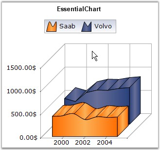

Spline Area Chart is similar to an Area Chart with the only difference being the way in which the points of a series are connected. It connects each series of points by a smooth spline curve. The area enclosed by the chart is filled with specified interior brush.
Multiple series can be plotted on the same chart and alpha-blended interior color can be used on the exterior chart to make the interior chart(s) show through.
The following image shows a multi series Spline Area Chart.

Figure 55: Chart displaying Spline Area Series in 3D Mode
Chart Details
|
Details | |
|
Number of Y values per point |
1 |
|
Number of Series |
One or More |
|
Cannot be Combined with |
Pie, Bar, Polar, Radar and Stacked Bar. |
Spline area series can be added to the chart using the following code.
|
[C#]
// Create a chart series and add data points into it. ChartSeries series = this.ChartWebControl1.Model.NewSeries("Series Name",ChartSeriesType.SplineArea); ChartSeries series = this.ChartWebControl1.Model.NewSeries("Series Name",ChartSeriesType.Area); series.Points.Add(0, 4.5); series.Points.Add(1, 3); series.Points.Add(2, 4); series.Points.Add(3, 3);
// Add the series to the chart series collection. this.ChartWebControl1.Series.Add(series); |
|
[VB.NET]
' Create a chart series and add data points into it. Dim series As ChartSeries = Me.ChartWebControl1.Model.NewSeries("Series Name", ChartSeriesType.SplineArea) ChartSeries series = this.ChartWebControl1.Model.NewSeries("Series Name",ChartSeriesType.Area); series.Points.Add(0, 4.5) series.Points.Add(1, 3) series.Points.Add(2, 4) series.Points.Add(3, 3)
' Add the series to the chart series collection. Me.ChartWebControl1.Series.Add(series) |